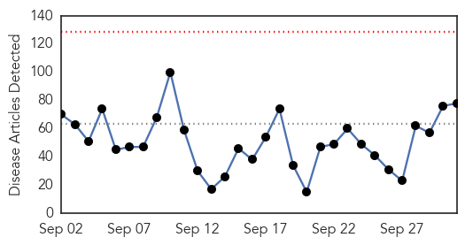
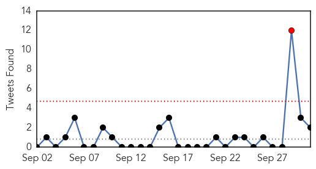
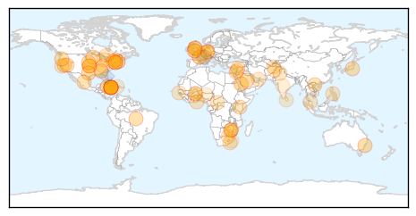
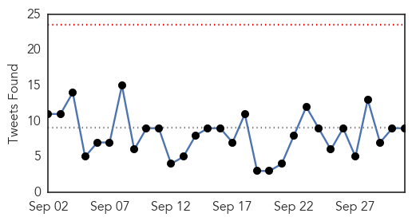
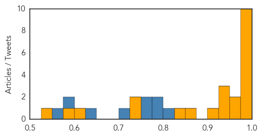

Unknown
30-Day Web Trend
0 alerts, 0 warnings

30-Day Twitter Trend
1 alerts, 0 warnings

Article Locations

Article Confidences
Top Articles:
- 0.997
- Schools affected by hand, foot and mouth disease being sanitised
- 0.994
- Carson City health department announces 2015 flu season community vaccination events
- 0.989
- Four TB patients hospitalised
- 0.986
- Hand, foot and mouth disease outbreak shuts Brac school
- 0.981
- It’s Not Too Soon to Get Your Flu Shot
- 0.979
- NewsChannel 10 / Amarillo News, Weather, Sports
- 0.975
- First MERS patient goes home
- 0.972
- Meningococcal deaths in the Hunter
- 0.970
- Sugar Cane Juice Causes Deadly Outbreak of Chagas in Brazil
- 0.967
- Seven new Legionnaires’ cases reported in Bronx
- 0.964
- Hand foot and mouth disease hits Cayman
- 0.957
- News, Weather and Sports for Lincoln, NE; KLKNTV.com
- 0.953
- More health care workers getting flu shot
- 0.913
- One Dead in New Legionnaires' Disease Outbreak in Bronx as Number of Cases Rises to 13
- 0.908
- Millions More Need H.I.V. Treatment, W.H.O. Says
- 0.899
- Children
- 0.898
- Hand, Foot and Mouth disease found in Cayman Islands school
- 0.883
- Number Of Schools Impacted By Hand, Foot And Mouth Disease Rises
- 0.882
- Flu Vaccine available on campus for students
- 0.881
- Salmonella Sickens 14 at Henry Ford Hospital in Detroit
- 0.869
- Rare Q fever outbreak among medical tourists reported in Ulster, Erie counties
- 0.866
- Vietnam jails journalist for spying for China
- 0.863
- Bluetongue cases increase among wildlife, livestock
- 0.862
- Deadly Salmonella Outbreak Linked to Cucumbers - Story
- 0.858
- 5 Americans come down with Q fever after traveling to Germany
- 0.840
- New HIV treatment regime
- 0.837
- New HIV treatment regime
- 0.830
- As Flu Season Approaches, Vaccine Clinics Open Throughout State
- 0.809
- Scientists ID Genes That Protect African Children From Malaria
- 0.785
- It’s Better to be a Dog: Lyme Disease Forum
- 0.774
- Ghana must be serious about rabies eradication
- 0.762
- New NYC Legionnaires' disease outbreak kills 1, sickens 12
- 0.743
- Renewed violence in Bangui makes it difficult to access hospital - Central African Republic
- 0.727
- Parents, schools blamed for hand, foot and mouth disease spread
- 0.721
- Mad Cow Disease returns to Wales
- 0.717
- HIV patients should start treatment immediately
- 0.709
- New Legionnaires’ Outbreak in the Bronx Claims a Life
- 0.707
- McCain accuses Russia of bombing CIA-backed rebels in Syria
- 0.707
- Russia, US clash at UN over parallel Syria air campaigns
- 0.707
- Israeli couple killed in West Bank shooting, say officials
- 0.707
- Iraq PM open to Russian airstrikes on Islamic State militants
- 0.707
- 'The Wakhan Front': French film gives Afghan war a mystical spin
- 0.707
- Burkina Faso launches negotiations for coup leader’s surrender
- 0.707
- Burkina Faso coup leader in police custody
- 0.707
- Afghan forces retake Kunduz from Taliban, officials say
- 0.694
- Every nine minutes, someone in the world dies of rabies
- 0.692
- Lydia Mutsch: Refugees Are in Need of Health Care Not Just Housing
- 0.684
- Experts warn about danger of rabies virus
- 0.681
- Dubai Health Authority denies malaria report
- 0.676
- Cooling towers blamed for Legionnaires’ disease at prison
Showing top 50 articles...
Top Tweets:
- 0.533
- ¡Participen en nuestro chat! Envíen sus preguntas sobre envejecimiento y la salud y expertos de la OMS responden AskWHO
- 0.528
- RT: FLU SCAN: Flu vaccine development; H5N6 in Vietnamese poultry https://t.co/RdpduVF51z
Ebola
30-Day Web Trend
0 alerts, 0 warnings

30-Day Twitter Trend
0 alerts, 0 warnings

Article Locations


Article Confidences
Top Articles:
- 1.000
- UH researcher’s book addresses, analyzes Ebola epidemic
- 0.999
- Mānoa: UH researcher's book addresses, analyzes Ebola epidemic
- 0.999
- International Cooperation the Key to Stopping Ebola
- 0.999
- World Health Organization Declares Liberia Ebola-Free Once Again After The Outbreak’s Re-emergence In June : World : koreaportal
- 0.993
- Speaker sheds light on Ebola outbreak – Vidette Online
- 0.991
- Is SA ready for a return of Ebola?
- 0.985
- Surviving Ebola Is Just the First Step
- 0.984
- The cost-effective way to protect against future Ebola outbreaks
- 0.983
- Ebola outbreak could have been mitigated, responder says
- 0.978
- First suspected Ebola case in Myanmar
- 0.951
- Kids With Ebola, Bird Flu Or TB? Texas Children's Hospital Will Be Ready
- 0.951
- Kids With Ebola, Bird Flu Or TB? Texas Children's Hospital Will Be Ready
- 0.938
- "It could have been prevented": Ebola Warrior speaks in the Twin Cities
- 0.938
- Nigerian carrier Arik to resume flights to Liberia next week
- 0.936
- Public advised against complacency on Ebola
- 0.917
- Chip-based technology enables reliable direct detection of Ebola virus
- 0.872
- Mobile Radio Skits Raise Ebola Awareness in Sierra Leone - Sierra Leone
- 0.849
- Cuba Headlines – Cuba News, Breaking News, Articles and Daily Information
- 0.739
- Sierra Leone: Sierra Leone Remote Monitoring Update September 2015
- 0.727
- OSF St. Joseph Medical Center Prepping for Pandemic
- 0.623
- Africa Information
- 0.593
- ‘Nigeria can soar higher health wise’
- 0.542
- UN, Gates Foundation Collaborate on Primary Health Care, Malaria
Top Tweets:
- 0.818
- Ebola outbreak could have been mitigated responder says - Bloomington Pantagraph http://t.co/Qv4UMjrxGZ ebola EVD
- 0.799
- Kids With Ebola Bird Flu Or TB? Texas Children's Hospital Will Be Ready - Capital Public Radio News http://t.co/8D8QQEG0C3 ebola EVD
- 0.777
- RT: Dr Lawal Bakare - that started talking about the Ebola - Africa Story . @africansmatter SABAAGM2015
- 0.774
- Outbreak tails can be looooooong: West African Ebola outbreak drags on with 4 new cases in Guinea. http://t.co/jvvmaRQnbc
- 0.757
- Speaker sheds light on Ebola outbreak - Vidette Online http://t.co/MqKbRFl3a0 ebola EVD
- 0.706
- NewLink wins $8.1M from DOD to advance Ebola vaccine - FierceVaccines http://t.co/i7lOvRHtir ebola EVD
- 0.648
- The Body Collectors of the Ebola Epidemic https://t.co/R8RSLX3MHQ
- 0.593
- .@WHO Ebola Emergency Committee meets today for 7th time. Not expecting they will say Ebola is no longer an emergency. Not till it's done.
- 0.565
- RT: SHOWCASE: @EbolaAlert contributed 1.8M of 2M impressions for SABAagm2015 science ebola media @PublicMediaPMA http://…